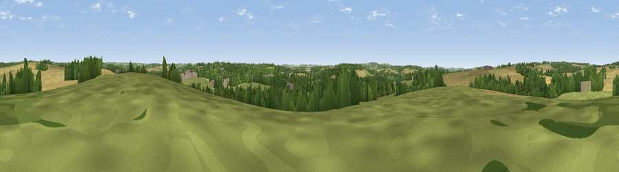

Viewpoint near New Alresford
#39021 in England · top 73% of its area beats it · near New AlresfordThe view, rendered

A 360° render of this exact spot computed from the terrain model, tree cover and land cover — summer colours, afternoon light, calibrated against photographs of famous viewpoints. Real trees, hedges and buildings will differ in detail.
The panorama
Grey silhouette: terrain skyline in each direction (720 bearings, Earth curvature and refraction included). Dashed green: skyline with trees (+15 m) and buildings (+8 m) as obstacles. Blue strip: how far the ground is visible on each bearing.
Where the view opens
Wedge length = distance to the farthest visible ground on that bearing (vegetation-aware). Rings at 10, 25 and 50 km.
What fills the view
39% cropland · 35% grassland · 23% woodland · 4% built-up
Angular shares of the visible panorama (visual magnitude), not map area. Landscape diversity 0.52 (0–1 Shannon).
Key numbers
More beautiful places nearby
The staircase of upgrades: each row has a higher view potential than everything closer. Driving times are estimates from straight-line distance, calibrated against real road routing — check an actual route before setting out.
| Place | Direction | Drive | Score |
|---|---|---|---|
| Viewpoint near Tichborne | SSW · 2 km | ~5 min | 35.9 |
| Viewpoint near Northington | NNE · 4 km | ~8 min | 43.0 |
| Itchen Stoke Down | NW · 4 km | ~8 min | 45.5 |
| Cheesefoot Head | SW · 7 km | ~14 min | 62.0 |
| Viewpoint near Chilcomb | SW · 7 km | ~15 min | 63.9 |
| Beacon Hill | SSE · 11 km | ~21 min | 71.7 |
| Viewpoint near Meonstoke | SSE · 14 km | ~26 min | 74.8 |
| Viewpoint near Buriton | SE · 19 km | ~32 min | 75.3 |
51.09412, -1.18208 · source: screening · position refined by local search. Computed location — check access rights before visiting.